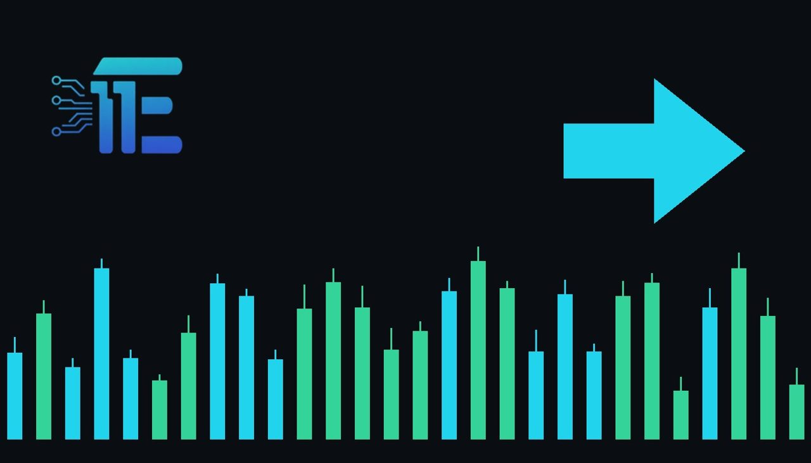

Bank of England Hikes Rates, Warns Inflation Near 5%Bank of England ដំឡើងអត្រាការប្រាក់ និងព្រមានថាអតិផរណាជិតដល់ 5%
XAU/USD impact: ◆ Mixedផលប៉ះពាល់លើ XAU/USD: ◆ ចម្រុះ

The Bank of England raised interest rates and warned inflation could approach 5%. Central bank monetary tightening and stubborn inflation signals present mixed forces for gold.
ធនាគារកណ្តាល Bank of England បានដំឡើងអត្រាការប្រាក់ និងព្រមានថាអតិផរណាអាចកើនឡើងជិតដល់ 5%។ ការរឹតបន្តឹងគោលនយោបាយ និងសម្ពាធថ្លៃទំនិញបង្កើតផលប៉ះពាល់ចម្រុះលើទីផ្សារមាស។
The Bank of England has increased its key interest rate for the first time since the Iran war, accompanying the decision with a warning that inflation is projected to approach 5%. Internal deliberations showed an appetite for even more aggressive action, as one policymaker voted to push the central bank's benchmark borrowing rate higher to 4.25%.
ធនាគារកណ្តាល Bank of England បានដំឡើងអត្រាការប្រាក់គោលជាលើកដំបូងចាប់តាំងពីសង្គ្រាម Iran ដោយភ្ជាប់ជាមួយការព្រមានថា អតិផរណា ត្រូវបានព្យាករថានឹងកើនឡើងជិតដល់ 5%។ នៅក្នុងកិច្ចប្រជុំនោះ សមាជិកបង្កើតគោលនយោបាយមួយរូបបានបោះឆ្នោតគាំទ្រការដំឡើងអត្រាការប្រាក់គោលឱ្យឡើងដល់ 4.25% ផងដែរ។
For gold traders, central bank rate decisions outside the United States transmit through foreign exchange dynamics and sovereign debt markets. Higher policy rates from major central banks typically provide support to local currencies such as the British pound, which can exert downward pressure on the US dollar. Because XAU/USD is priced in greenbacks, broad weakness in the US currency often provides a supportive baseline for precious metals.
សម្រាប់អ្នកជួញដូរមាស ការសម្រេចចិត្តលើអត្រាការប្រាក់របស់ធនាគារកណ្តាលក្រៅពីសហរដ្ឋអាមេរិក ជះឥទ្ធិពលតាមរយៈទីផ្សាររូបិយប័ណ្ណបរទេស និងទិន្នផលសញ្ញាប័ណ្ណ។ ការដំឡើងអត្រាការប្រាក់ពីធនាគារកណ្តាលធំៗជាទូទៅជួយគាំទ្ររូបិយប័ណ្ណក្នុងស្រុក ដែលអាចដាក់សម្ពាធឱ្យប្រាក់ដុល្លារអាមេរិកចុះខ្សោយ។ ដោយសារតែ XAU/USD ត្រូវបានកំណត់តម្លៃជា USD ភាពទន់ខ្សោយនៃរូបិយប័ណ្ណដុល្លារអាមេរិកជាទូទៅផ្តល់កម្លាំងគាំទ្រដល់លោហៈធាតុមានតម្លៃ។
However, the macroeconomic signals from the Bank of England offer competing drivers for the metal. If higher global borrowing costs elevate yields across international debt markets, the increased yield on competing interest-bearing assets could pressure non-yielding gold. Conversely, if an inflation rate nearing 5% solidifies fears of persistent cost pressures while weakening the US dollar against foreign currencies, gold could attract sustained demand as a traditional inflation hedge.
ទោះជាយ៉ាងណា សញ្ញាម៉ាក្រូសេដ្ឋកិច្ចពី Bank of England បង្ហាញពីកត្តាជះឥទ្ធិពលផ្ទុយគ្នាលើមាស។ ប្រសិនបើការកើនឡើងនៃថ្លៃដើមខ្ចីប្រាក់សកលរុញច្រានទិន្នផលសញ្ញាប័ណ្ណឱ្យកើនឡើង នោះការកាន់កាប់ទ្រព្យសកម្មមិនផ្តល់ការប្រាក់ដូចជាមាសអាចប្រឈមនឹងសម្ពាធធ្លាក់ចុះ។ ផ្ទុយទៅវិញ ប្រសិនបើអតិផរណាដែលជិតដល់ 5% បង្កើនការព្រួយបារម្ភអំពីតម្លៃទំនិញឡើងថ្លៃយូរអង្វែង ខណៈដែលប្រាក់ដុល្លារអាមេរិកចុះខ្សោយ មាសអាចនឹងទទួលបានតម្រូវការការពារហានិភ័យអតិផរណា។
Looking forward, traders should monitor upcoming central bank communication to gauge whether the vote for 4.25% indicates broader appetite for further tightening. Market participants will also assess subsequent inflation prints against the 5% warning to evaluate real yield behavior and currency adjustments.
ទៅមុខទៀត អ្នកជួញដូរគួរតែតាមដានសេចក្តីថ្លែងការណ៍គោលនយោបាយរបស់ Bank of England ដើម្បីវាយតម្លៃថាតើសម្លេងឆ្នោតគាំទ្រកម្រិត 4.25% នឹងជំរុញឱ្យមានការដំឡើងបន្តទៀតឬយ៉ាងណា។ ទន្ទឹមនឹងនេះ ទីផ្សារ នឹងបន្តតាមដានទិន្នន័យអតិផរណាធៀបនឹងការព្យាករ 5% ដើម្បីតាមដានបម្រែបម្រួលទិន្នផលពិតប្រាកដ និងតម្លៃរូបិយប័ណ្ណ។
Key takeawaysចំណុចសំខាន់ៗ
- The Bank of England delivered a rate hike, with one policymaker voting for a 4.25% rate.
- Bank of England បានដំឡើងអត្រាការប្រាក់ ដោយមានសមាជិកមួយរូបបោះឆ្នោតដំឡើងដល់ 4.25%។
- Policymakers warned that inflation will approach 5%, highlighting persistent price risks.
- ធនាគារកណ្តាលបានព្រមានថា អតិផរណានឹងកើនឡើងជិតដល់ 5% ដែលបង្ហាញពីហានិភ័យថ្លៃទំនិញបន្តកើតមាន។
- Gold faces crosscurrents between rising global interest rates and inflation-hedging appeal.
- តម្លៃមាសប្រឈមកម្លាំងទាញពីរ គឺការកើនឡើងនៃអត្រាការប្រាក់សកល និងតម្រូវការការពារហានិភ័យអតិផរណា។
Original commentary by THE MARKET CODE, based on public reporting from Economy. Written with the help of AI. Educational only, not financial advice.
មតិវិភាគដើមដោយ THE MARKET CODE ផ្អែកលើការរាយការណ៍សាធារណៈពី Economy។ សរសេរដោយមានជំនួយពី AI។ មាតិកាអប់រំប៉ុណ្ណោះ មិនមែនជាដំបូន្មានហិរញ្ញវត្ថុទេ។